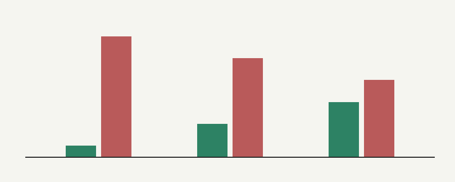

Stablecoin Supply Pulse v5
Historical research through 2026-10-04. Retrospective results, revised source data, gross returns and overlapping events; no promise of future performance.

Groups from left: BTC, ETH, SOL. Green: successes / mature events; red: false alarms / mature events. Bar height 260 px represents 100%; exact values in the table. Zero events produce empty bars.
Original report and methodology · PNG

Periodo richiesto 2023-10-05–2026-10-04 UTC, riscaldamento dal 2023-06-27. Prezzi Binance BTC/ETH/SOLUSDT da cache BT1. Metrica: supply globale nominale USD (totalCirculating.peggedUSD), medesima serie confrontata con tre prezzi; non supply per chain. Nessuna sostituzione di dati mancanti; zero escluso. Serie giornaliera costruita senza buchi di calendario; valori mancanti invalidano tutta la finestra.
I Pine non definiscono segnali operativi. Convenzione sperimentale dichiarata prima del calcolo: attraversamento sopra +5 = ipotesi rialzista, sotto −5 = ribassista; non si ripete l'allarme ogni giorno nella stessa banda. Nessuna ottimizzazione. Il valore mostrato al giorno t deriva soltanto da t−1, come result[1]; ingresso all'apertura UTC di t, esito alla chiusura di t+29 (30 candele). Successo: rendimento finale ≥+10% per rialzo oppure ≤−10% per ribasso. Falso allarme: ogni altro esito; non si misura il tocco intraperiodo. Ultimi 29 giorni senza esito completo esclusi, separatamente contati. Allarmi sovrapposti non indipendenti: nessun test di significatività.
Controllo di base: frequenza di +10% / −10% tra tutte le aperture con 30 giorni completi. Strategia di confronto dichiarata: solo allarmi positivi, compra all'apertura, tieni 30 candele, poi liquidità; ignora allarmi durante una posizione, niente short. Allarmi non maturi ignorati anche dalla strategia. Confronto tieni sempre: prima apertura del periodo / ultima chiusura. Rendimenti lordi, commissioni, slippage, interessi e tasse esclusi; strategia e hold hanno esposizioni differenti.
Nessuna promessa. Fee positive non sono automaticamente rialziste: il segno è soltanto una convenzione sperimentale. Gli esiti non provano congestione, flussi o causalità. I dati storici del provider sono revisionabili e non hanno timestamp di pubblicazione: nessuna validazione point-in-time. Fonte supply nominale globale diversa da una capitalizzazione a prezzo di mercato. USDT è una proxy USD; disponibilità e definizione TradingView non riconciliate.
| Asset | Giorni / letture | Allarmi + / − | Successi / maturi | Falsi | Pendenti | Base +10% / −10% | Strategia % (trade) | Tieni sempre % |
|---|---|---|---|---|---|---|---|---|
| BTC | 1096 / 1096 | 12 / 0 | 1 / 12 | 11 | 0 | 300 / 155 su 1067 | -3.80 (6) | 211.50 |
| ETH | 1096 / 1096 | 12 / 0 | 3 / 12 | 9 | 0 | 352 / 289 su 1067 | -9.13 (6) | 65.61 |
| SOL | 1096 / 1096 | 12 / 0 | 5 / 12 | 7 | 0 | 425 / 298 su 1067 | -17.29 (6) | 425.72 |
Fonti: {"supply": "https://stablecoins.llama.fi/stablecoincharts/all", "BTC": "https://api.llama.fi/summary/fees/bitcoin?dataType=dailyFees", "ETH": "https://api.llama.fi/summary/fees/ethereum?dataType=dailyFees", "SOL": "https://api.llama.fi/summary/fees/solana?dataType=dailyFees"}. Cache e CSV: `/Users/ben/MOTORE CRYPTO/dati/backtest_pine2`. Dettaglio allarmi: PINE2_EVENTI.json. Letture e disponibilità ieri: PROVA_PINE2.json. I giorni senza metriche non sono segnali negativi. Totale letture inferiore a 1096 significa copertura incompleta, non un backtest completo di tre anni. La base prezzo e il tieni sempre usano tutto il periodo: non sono filtrati sui soli giorni di disponibilità della metrica, quindi per BTC Fee Pressure il confronto ha coperture differenti. Le serie supply dei tre asset sono identiche e non costituiscono tre prove indipendenti.